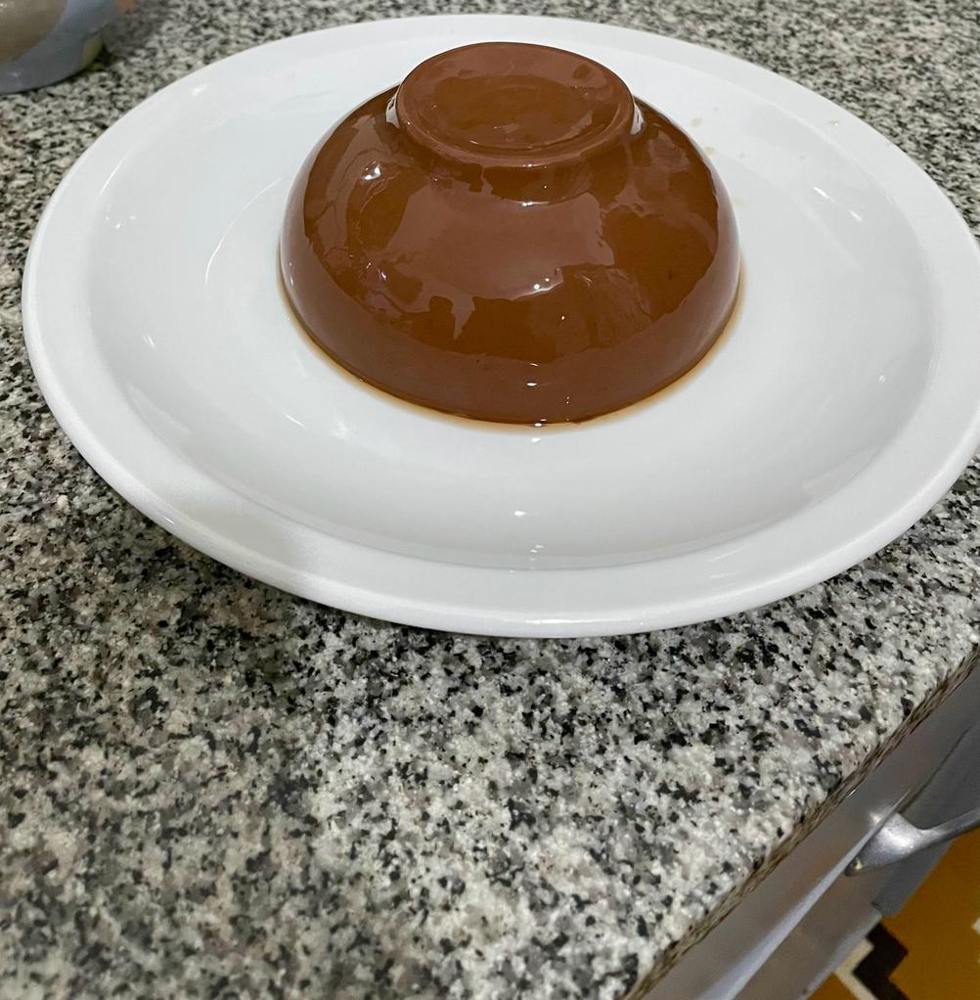

Dulces
Flan de chocolate

Equipamiento
- Licuadora
- Flanera
Igredientes
- 2 tazas de azucar organica
- 1 litro de bebida vegetal de almendras
- 1 y 1/4 cucharadas de agar agar
- 1/4 taza de cacao amargo en polvo
- Una cucharada de almidon de maiz
- Pisca se sal
- 1 cucharita de esencia de vainilla
Procedimiento
Caramelo
- En una olla a fuego medio colocar 1 taza de azucar hasta formar un caramelo
- Colocar el caramelo en la flanera cubriendo toda la zona (luego dejar enfriar el caramelo)
Flan
- Colocar todos los ingredientes menos el agar agar en la Licuadora y mezclar hasta que este todo integrado
- Colocar la mezcla en una olla a fuego medio (siempre revolviendo hasta terminar)
- Una vez que rompa el hervor agregar el agar agar y seguir revovlviendo por 5 minutos mas
- Luego colocar en la flanera ya encaramelada y dejar enfriar primero a temperatura ambiente, luego llevar a la heladera por minimo 6 horas